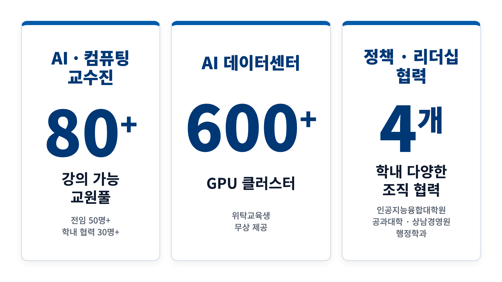
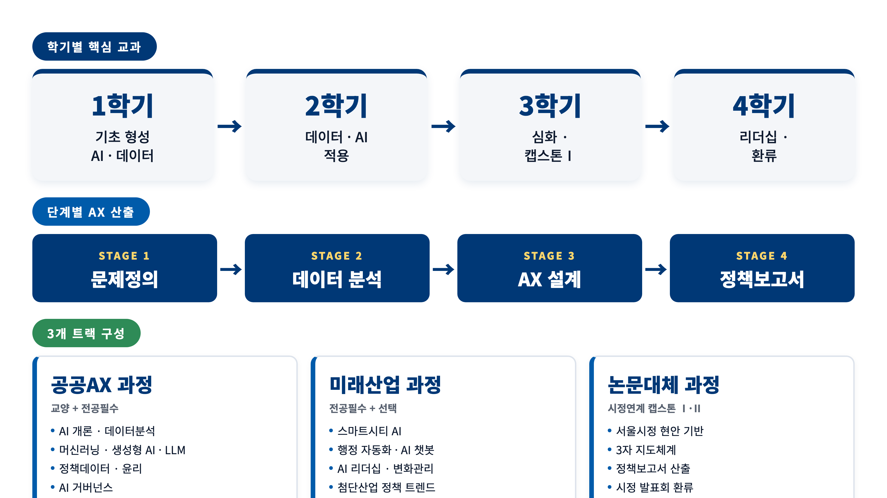
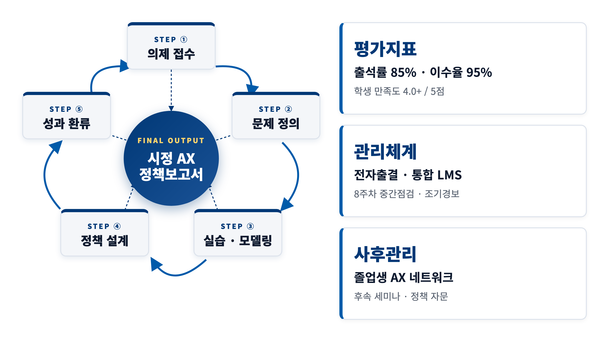

AI·첨단산업육성학과
서울시정 AX 실무 리더 양성
공공 AX 전략 · 첨단산업 정책 전문가 양성 · 30명 · 4학기 · 32학점
연세대학교 인공지능융합대학원 (특수대학원)
총괄책임자 노알버트 부원장 (인공지능학과 부교수 · 인공지능융합대학원 부원장)
2026. 5.
목차
사업 개요 및 추진 배경
사업 구조 · 추진체계 · 추진 배경 · 사업 목표
한눈에 보는 사업 구조
핵심. 단위 강좌가 아닌 「공공 AX 실무 리더 양성 학위과정」 · 서울시정 환류까지 전 과정 설계.
본 계약학과 운영 · 3대 핵심 자원

교수진 · 인프라 · 학내 조직 협력의 3축으로 본 사업 운영
추진 배경 · 공공 AX 수요
AI 확장 자동화 · 정책 예측
스마트시티 · 생성형 행정
학습 공백 단기 특강 한계
실행 경험 부재
실습형 석사 공무원 30명 · 2년 야간
AX 실행 리더 양성
핵심 진단. AI 수요는 확장, 단기 특강은 한계. 학위과정 수준 종합 학습이 필요.
사업 목표
기획 · 설계 · 집행 · 평가할 수 있는
공공 AX 정책 실무 리더 30명 양성
① AI 기술 이해
머신러닝 · 데이터사이언스 · 생성형 AI·LLM
② 정책 기획
시정 현안 데이터 재정의 · 적용성·효과 평가
③ 실행
부서 AX 과제 발굴 · 시범사업 설계
④ 거버넌스
개인정보 · 편향 · 설명가능성 · 책임성
⑤ 성과 환류
캡스톤 정책보고서 · 시정 검토 자료 산출
연세대학교 강점 및 실적
4대 강점 · 사업수행 역량 · 유사사업 실적 · 교수확보율
4대 구조적 강점
① 다학제 운영
AI융합 · 공과 · 상남경영원 · 정책
② 야간 운영 기반
평일 18:50 ~ 22:00 가동
③ 실습형 AI 인프라
600+ GPU 자체 데이터센터
④ AI 리더십 협력
상남경영원 AI 리더 과정 협력
차별 포인트. AI 기술 + 공공정책이 단일 학위과정에서 결합되는 다학제 구조.
사업수행 역량
인적 역량
- AI 전임교원 50명+
- 학내 협력교원 30명+
- 총 강의 가능 80명+
- 산업체 계약학과 2년 운영
물적 여건
- 600+ GPU 데이터센터 무상
- 신촌캠퍼스 공학원 야간 강의실
- LMS · 도서관 동등 권한
학교 차원 지원
- 본부 학사·재무처 정기 협의
- 강의·강사료 표준화 완료
- 전담 계약직원 1인 신규 채용
유사사업·계약학과 수행실적
| 연도 | 사업명 (발주기관) | 규모 |
|---|---|---|
| 2024 | 지능융합학과 산업체 계약학과 (LG전자) | 석사 2년 · 운영 중 |
| 2024 | BK21 FOUR 인공지능융합 교육연구단 (교육부) | 7년 · 연 30억 |
| 2025 | 인공지능융합대학원 특수대학원 (연세대) | 연 70명 · 야간 가동 |
| 2026 | 상남경영원 AIL과정 (상남경영원) | AI+비즈니스 |
| 2026 | AI 중심대학 (과기정통부) | 8년 · 연 30억 |
전 단계 포괄 · 위탁교육 → 계약학과 정규 운영 → 공공 정책 연구.
교수확보율 (2026.4.1 기준)
인공지능학과 · 컴퓨터과학과 · 인공지능시스템학과
의미. 市 맞춤형 우수 전담 교수진 배정 · 정량 지표로 충족.
교수진 구성
전임 · 협력 · 서울시·산업 전문가 3중 구조
교수진 · 3중 구조
① AI 기술 전임
인공지능융합대학원
인공지능융합대학
② 정책·리더십 협력
상남경영원
공과·행정·정책 협력교원
③ 서울시·산업 전문가
서울시 정책부서 멘토
산업체 외부 전문가
시정연계 캡스톤. 지도교수 + 서울시 부서 멘토 + 외부 전문가 3자 지도체계
주관 교수진 · AI 기술 핵심
| 성명 | 소속 | 주요 연구 분야 |
|---|---|---|
| 한승재 | 인공지능융합대학장 · 대학원장 | 클라우드·엣지, 분산학습 |
| 노알버트 | 인공지능학과 부교수 · 부원장 | 학습이론, 정보이론, 디퓨전 |
| 김재형 | 인공지능학과 | 기계학습, 언어모델 |
| 여진영 | 인공지능학과 | 자연어처리, 대화모델 |
| 이동하 | 인공지능학과 | 데이터마이닝, 정보검색 |
전체 17명 주관 교수진 (백업 자료 참고)
총괄책임자 · 노알버트 부원장
- 현직인공지능학과 부교수 · 인공지능융합대학원 부원장
- 전공학습이론 · 정보이론 · 프라이버시 · 디퓨전 생성모델
- 교육 담당정책데이터·윤리 · AI 거버넌스 심화
- 행정 역할총괄책임자 · 서울시 실무 협의 총괄
- 연락처02-2123-7808 · albertno@yonsei.ac.kr
교육과정
학습구분 · 4학기 32학점 로드맵 · 3개 트랙 · 평가체계
학습구분 · 개설형태
- 개설시기2027.3 개강 (조율 가능)
- 대학원인공지능융합대학원 (특수)
- 학과명AI·첨단산업육성학과
- 학과유형재교육형 계약학과
- 학위과정석사과정
- 모집정원30명 · 1회 모집
- 운영기간2년 4학기 · 32학점
- 학습구분야간 평일 18:50 ~ 22:00
- 강의시간1교시 18:50, 2교시 20:30
- 결손 보완보강 · 녹화 · 대체과제
4학기 32학점 교육 로드맵 · 3개 트랙

교과목 편성 요약 · 32학점
공통 (4과목)
(8과목 · 캡스톤Ⅰ·Ⅱ 포함)
심화 (4과목)
편성 원칙. 교양·전공필수·전공선택(심화) 균형 편성 · 위탁교육생은 학기별 지정 교과를 학기당 8학점씩 이수.
↓ 교과목 세부 편성표는 백업 자료 참고 (교양 · 전공필수 · 전공선택)
평가체계
일반 교과
- 출석 20%
- 과제·실습 30%
- 중간·기말 평가 50%
캡스톤 교과
- 문제정의 20%
- 중간발표 20%
- 최종 보고서 30%
- 서울시 평가 30%
특징. 캡스톤 평가의 30%를 서울시가 직접 부여 · 시정 수요 직접 환류.
운영체계 · 인프라 · 차별화
5단 운영 · 캡스톤 환류 · 인프라 · 학생 관리 · 일정 · 등록금
사업추진체계 · 5단 운영
시정현안 기반 AX 캡스톤 환류 루프

시설 · AI 데이터센터
강의 · 실습 시설
- 공학원 강의실 · 30명 운영 최적
- 빔프로젝터 · 전자교탁 · 녹화
- 실습실 · 세미나실 · 학내 네트워크
데이터 보안 원칙
- 공개·비식별·가명처리 데이터 우선
- 민감정보 별도 협의 절차
- 학내 보안 관리 내 실습
교육생 관리 4단계
실시간 관리
중간점검
조기경보
성과 환류
설계 원칙. 조기 감지 → 즉시 면담 → 위기 관리 → 중도이탈 차단.
사업추진 일정
| 시기 | 주요 추진 |
|---|---|
| 2026.5 | 신청서 · PT 자료 제출 |
| 2026.5–6 | 대면평가 (본 PT) |
| 2026.6 | 주관대학 선정 · 협약 체결 |
| 2026.8–12 | 학과 설치 · 위탁교육생 선발 |
| 2027.3 | 1학기 개강 |
| 2028.3 | 시정연계 캡스톤Ⅰ 착수 |
| 2029.1 | 최종 정책보고서 심사 |
| 2029.2 | 학위 수여 · 사업 종료 |
| 2029 이후 | AX 전문가 네트워크 운영 |
등록금 · 학생 권익 보장
| 구분 | 금액 (천원) |
|---|---|
| 표준 등록금 (A) | 10,605 |
| 대학 자체 감면 (B) | 2,705 |
| 책정 등록금 (A · B) | 7,900 |
학생 권익 보장
- 추가 학비 부담 없음
- 학사 일정 보장 (학과 중단·축소 시도)
- 개인정보 보호법 준수
- 졸업 후 시정 적용 사례 추적 보고
왜 연세대인가
①
즉시 가동
②
다학제
③
자체 GPU
④
환류 루프
질의응답
Backup Slides
정량 목표 · 교과 편성표 · 전체 교수진 · 보완 운영체계
정량 목표
| 지표 | 1년차 (2027-1·2) | 2년차 (2028-1·2) | 졸업 시점 |
|---|---|---|---|
| 이수율 | 학기당 95% 이상 | 학기당 95% 이상 | · |
| 출석률 | 학기 평균 85% 이상 | 학기 평균 85% 이상 | · |
| 캡스톤 결과물 | 개인별 1건 (Ⅰ) | 개인별 1건 (Ⅱ) | 2건 + 정책보고서 1건 |
| 학생 만족도 | 4.0 / 5점 | 4.2 / 5점 | · |
| 시정 협의체 | 연 1회 | 연 1회 | 총 2회 이상 |
정성 목표
기획 · 실행 · 평가 주도
캡스톤·교과로 환류
AX 전문가 네트워크
추진전략 · 4단계
교육과정 편성
정례 협의체
공공 활용
AX 네트워크
설계 원칙. 공공AX 교육 → 정책 이해 → 시정현안 캡스톤 → 성과 환류 (폐쇄 루프)
주요 연혁
| 1885 | 광혜원 설립 (현 연세대학교 전신) |
|---|---|
| 1979 | 공학대학원(특수대학원) 설립 · 47년간 야간 재교육형 운영 |
| 2022 | 인공지능융합대학 신설 |
| 2023 | AI 데이터센터 가동 · GPU 클러스터 구축 |
| 2025 | 인공지능융합대학원 개원 · 산업체 계약학과 운영 개시 |
| 2025 | 창립 140주년 · AI 학·석·박사 전 과정 체계 완성 |
경쟁 우위 · 타 대학 대비
- 국내 사립대 중 AI 분야 전임교원 수 최상위권
- 학내 4개 단과대학 협력 (인공지능융합·공과·상남·행정)
- 자체 GPU 인프라 보유 · 외부 클라우드 비의존 안정 운영
- AI 리더 과정(상남경영원) 참여 경험 · 임원·정책 리더 재교육
정부 평가 · 인증
대학기관 평가인증
한국대학평가원 인증 유지
인증기간 2023.1.1 ~ 2027.12.31
(5년 주기 갱신)
대학혁신지원사업
교육부 1~3주기 연속 수행
1주기 2019~2021
2주기 2022~2024
3주기 2025~2027
ABEEK 공학교육인증
공과대학 다수 학과
심화프로그램 운영·인증 실적
졸업생 인증 이수 확인 체계
산학협력 · 국제 인증
산학협력 인프라
- 연세대학교 산학협력단 · 사업 수주 규모 최상위권
- AI 산업체 협력 · 삼성전자·LG·하이닉스
- 정부·공공기관 협력 · 과기정통부·교육부·서울특별시·인사혁신처
국제 인증
- QS 세계대학랭킹 2026 · 세계 50위
- U.S. News & World Report 2025 · AI 국내 1위
- NeurIPS · ICML · CVPR 다수 게재
- UC Irvine 등 AI 공동 연구 협약
주관 교수진 ② · 공공 AX · 응용
| 성명 | 소속 | 주요 연구 분야 |
|---|---|---|
| 이병주 | 컴퓨터·소프트웨어 전공 주임교수 | HCI, 사용자 인터페이스 |
| 조성배 | 컴퓨터과학과 | 뉴로·심볼릭 AI, Trustworthy AI |
| 강민석 | 컴퓨터과학과 | 데이터 시각화, 책임 있는 AI |
| 백종덕 | 인공지능학과 | 의료 인공지능, 의료영상 |
| 황성재 | 인공지능컴퓨팅 전공 주임교수 | 컴퓨터비전, 의료영상분석 |
| 한동준 | 컴퓨터과학과 | 분산·연합학습, 온디바이스 AI |
주관 교수진 ③ · 비전·로봇·시스템
| 성명 | 소속 | 주요 연구 분야 |
|---|---|---|
| 박은병 | 인공지능학과 | 기계학습, 컴퓨터 비전 |
| 어영정 | 인공지능학과 겸임교수 | 컴퓨터 비전, 영상처리 |
| 이영운 | 인공지능학과 | 로봇 제어, 로봇학습 |
| 이종민 | 인공지능학과 | 의사결정, 지능형 에이전트 |
| 김지응 | 컴퓨터과학과 | 정형검증, 분산 시스템 |
| 이경우 | 컴퓨터과학과 | 엣지 컴퓨팅, 내장형 시스템 |
학내 협력교원 · 외부 전문가
상남경영원
AI 리더십
변화관리 모듈
공과·응용통계·정책
정책효과 측정
공공데이터 자문
서울시 정책부서
시정현안 제시
캡스톤 멘토링
산업체 전문가
생성형 AI · 스마트시티
클라우드 · 거버넌스
교양교과 · 공통 8학점
| 교과목 | 학점 | 편성 학기 |
|---|---|---|
| AI 개론과 공공AX | 2 | 1-1 |
| 인공지능 프로그래밍 | 2 | 1-1 |
| 정책데이터 AI윤리 | 2 | 1-2 |
| AI리더십, 법규제와 AX변화관리 | 2 | 2-1 |
전공필수 · 16학점
| 교과목 | 학점 | 편성 학기 |
|---|---|---|
| 인공지능 및 딥러닝 기초 | 2 | 1-1 |
| 데이터 시각화 | 2 | 1-1 |
| 데이터사이언스와 정책데이터 분석 | 2 | 1-2 |
| 컴퓨터 비전 | 2 | 1-2 |
| 생성형 AI 및 LLM | 2 | 2-1 |
| 딥러닝 모델 경량화 | 2 | 2-1 |
| 시정연계 캡스톤Ⅰ (논문대체) | 2 | 2-1 |
| 시정연계 캡스톤Ⅱ (논문대체) | 2 | 2-2 |
전공선택 · 8학점
| 교과목 | 학점 | 편성 학기 |
|---|---|---|
| 추천시스템 및 개인화 | 2 | 1-2 |
| 강화학습 및 로봇 | 2 | 2-2 |
| 딥러닝을 활용한 의료영상분석 | 2 | 2-2 |
| 온디바이스 AI 최적화 | 2 | 2-2 |
논문대체 운영
학위논문 대신 「시정현안 기반 AX 캡스톤 프로젝트」로 운영
캡스톤 결과물 구성
- 정책문제 정의서
- 데이터·AI 적용 가능성 검토서
- 실행계획서 · 위험·윤리 검토서
- 정책효과 평가계획서
- 최종 정책보고서
학습관리 · 야간 보완체계
LearnUS · 연세포탈
- 강의자료 · 과제 · 출결 · 성적 통합 관리
- 전자출결 모든 강의 적용
- 중앙도서관 전자자료 동등 권한
공무원 직무 대응
- 출장 · 당직 · 재난 사유 시 보강
- 녹화자료 학습 · 결손 보완
- 격주 토요일 보강 / 집중 워크숍
서울시 · 연세대 3단 협의체
학사운영 협의체
등록 · 출결 · 일정 · 정산
교과환류 협의체
정책현안 · 캡스톤 주제
성과평가 협의체
결과물 · 만족도 · 활용성
공고 위탁교육 조건 「연 1회 이상 협의」 · 3단 협의체로 충족.